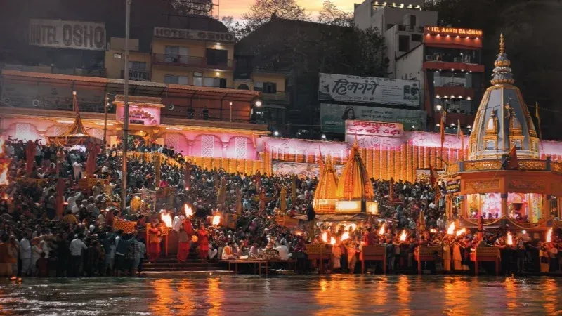
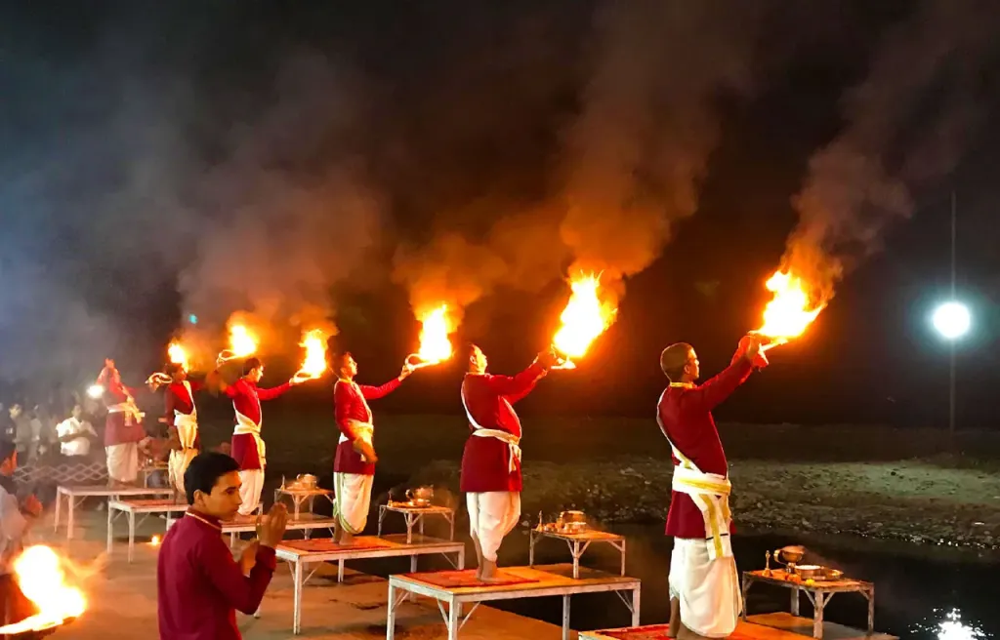
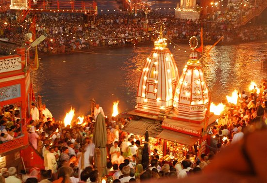
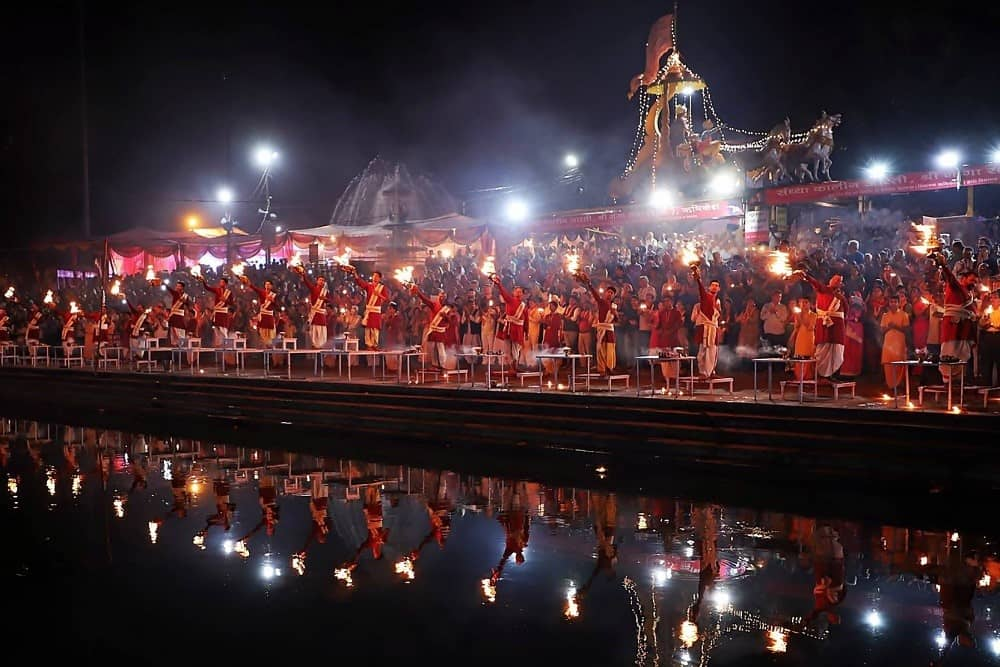
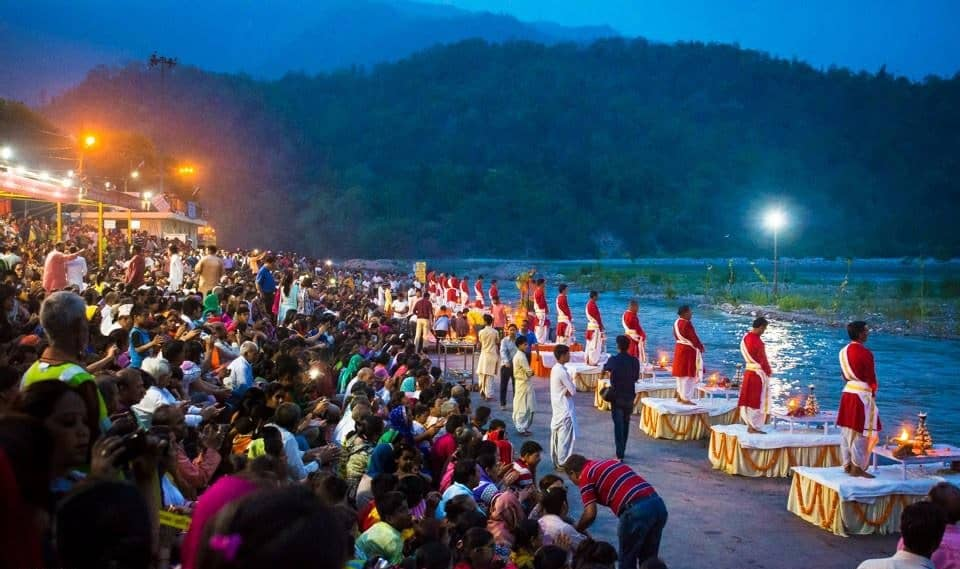

Ganga Aarti in Rishikesh is one of the most divine and unforgettable spiritual experiences in India. Performed every evening on the banks of the holy Ganga, this grand ritual involves priests offering prayers to Maa Ganga with synchronized movements of large flaming diyas, ringing bells, blowing conch shells, and soulful bhajans that echo across the river. The sight of hundreds of glowing lamps floating on the water, combined with the chants and fragrance of incense, creates a magical atmosphere of devotion, peace, and surrender.
Rishikesh, known as the Yoga Capital of the World, holds special significance for Ganga Aarti because the river here is pure, fast-flowing, and revered as the cradle of spirituality. The two most famous spots are Parmarth Niketan Ashram (calm, meditative, and inclusive) and Triveni Ghat (grand, traditional, and vibrant). Both draw locals, tourists, and seekers from around the world, turning the evening into a collective moment of gratitude and connection with the divine flow of life.
Every evening at sunset (summer ~6:00–7:00 PM, winter ~5:30–6:30 PM) — arrive 30–45 minutes early for a good spot, especially on weekends or festivals.
Parmarth Niketan (peaceful, spiritual, young chanters) and Triveni Ghat (grand, traditional, crowded) — both are must-see for different vibes.
Wear modest clothes, sit comfortably on the ghats, buy a floating diya to offer, keep phones on silent, and stay for the full aarti to feel the energy.
"Ganga Aarti is not just a ritual — it is the river herself singing back to her children, washing away worries and lighting the heart with eternal peace and devotion."